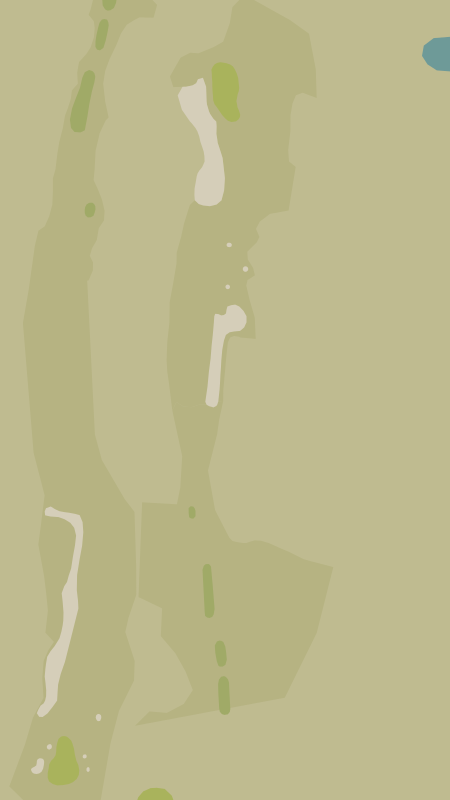

Your hole. The groups ahead. The time to finish.A clearer view of the round, wherever you look.

iPhone + Apple Watch interface concepts · illustrative demo data · native apps in concept
Anonymous tee-time groups. Clearer course traffic.See where groups are, how they’re moving, and what is ahead.
No courses match. Try a course name or location.
Four-course visual demo · group locations are simulated · aerial imagery: USDA / USGS